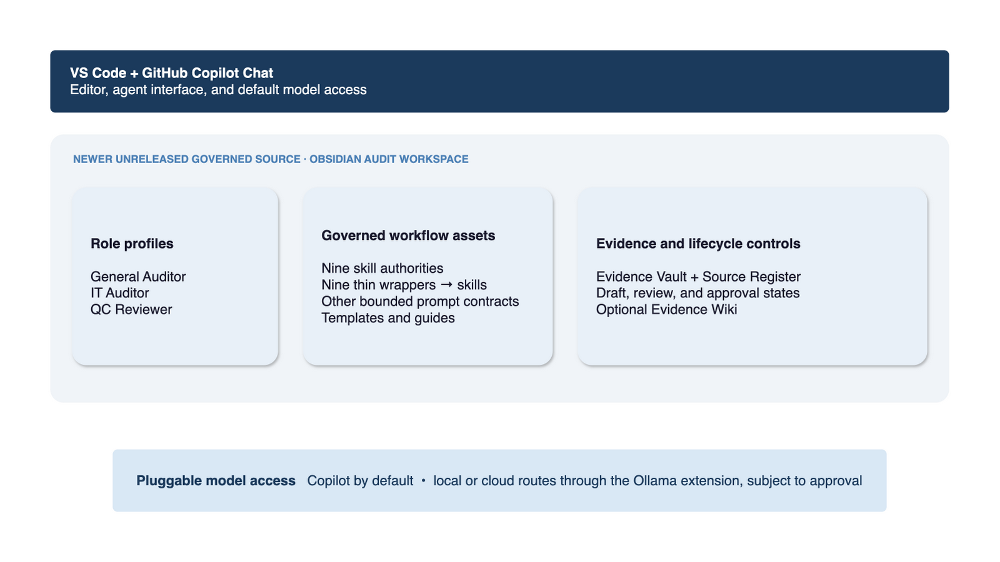

AEOS 1.0.0 is a generated release candidate, not a validated release or production-ready product. It supports draft preparation and controlled fieldwork workflows. It does not provide audit assurance, approve evidence, select samples, form conclusions, or send external communications.
The product idea
Flexible approved inputs. Controlled draft outputs. Human reliance decisions.
AEOS begins when an auditor-approved audit work program is available. The work program may be a spreadsheet, a narrative document, or another approved structure. The agent interprets that material through a governed auditor role and workflow rather than forcing every engagement into one fixed input schema.
The resulting drafts follow controlled locations and states. Source identity, gaps, contradictions, and proposed methodology remain visible. The auditor authorizes every transition from preparation to reliance.
Human authorization controls the move from draft assistance to professional reliance.
The problem
A fluent workpaper can still contain a weak audit chain.
Unsupported facts can enter a template because a model tries to fill every field. Source identity can disappear during conversion or summarization. Meeting statements can be treated as documentary evidence. Conflicts can be smoothed over. A polished conclusion can hide weak work performed several stages earlier.
The response
Govern the route, evidence state, and authority—not only the prompt.
AEOS makes source roles, context limits, output routes, stop conditions, evidence gaps, and review decisions part of the workspace. A blank or unresolved field is valid when approved material does not support an answer.
Lifecycle
One connected route from approved procedure to reviewed reporting draft
The default route separates preparation, design testing, operating-effectiveness testing, quality review, reporting, and closure. The sequence is configurable, but source authority and auditor approval remain fixed principles.
1
Set the engagement boundary
Record engagement context, approved criteria, source roles, AI read/write limits, and the approved work program.
2
Prepare draft scaffolds
Preserve source wording and identifiers. Keep missing population, sampling, ownership, or evidence details unresolved.
3
Conduct TOD
Assess whether the control exists, is implemented, and can mitigate the risk if it operates as intended.
4
Conduct TOE
Test whether the design-confirmed control operated consistently over the relevant period using the approved population and sample.
5
Review and correct
Run separate quality review for TOD and TOE, retain correction records, and verify source support before merge.
6
Report and close
Draft reporting only from reviewed inputs. Keep external communication human-approved and lessons separate from evidence.
Synthetic walkthrough
GenAI change governance shows why unresolved work must remain visible.
A synthetic IT audit procedure assesses whether production changes to a generative AI service—model versions, prompts, retrieval configuration, evaluation results, and safety controls—are evaluated, approved, deployed, and monitored.
At intake, AEOS preserves the approved procedure and prepares draft TOD and TOE workpapers. If the change population, sampling basis, or evidence owner is absent, those fields stay unresolved for the auditor.
Approved procedureDesign walkthroughPopulation and sample approvalItem-by-item testingIndependent QC
The agent can organize evidence and retain contradictions. It cannot decide whether a conflict is a control deficiency, a data-quality problem, or a scope matter. That decision remains with the auditor.
Product layers
The parts have different jobs and different authority.
Engagement workspace
Lifecycle folders keep planning, evidence, meetings, requests, workpapers, reviews, reporting, and closure records in defined routes.
Auditor roles
General Auditor, IT Auditor, and QC Reviewer profiles define professional context, evidence boundaries, and review responsibilities.
Skills and commands
Reusable skills hold workflow authority. Thin command wrappers make the skills discoverable without duplicating or weakening the procedure.
Templates and guides
Templates shape drafts. Operating guides connect individual tasks into a controlled end-to-end audit route.
Evidence controls
Originals, derivatives, source roles, review state, and reliance state remain distinct and traceable.
Deterministic checks
Code tests path safety, structure, privacy, package integrity, and other bounded properties. It does not make audit judgments.
Layered controls address different failure modes without turning the audit into a rigid automated pipeline.
Newer unreleased governed source · setup and model routes
A small desktop toolchain, with explicit data-governance choices
The current unreleased AEOS source uses an Obsidian vault opened in Visual Studio Code. GitHub Copilot Chat provides the main interaction surface. Its roles, skill authorities, thin command wrappers, other prompt contracts, templates, guides, and controls remain inspectable Markdown.
Core workspace
Obsidian + VS Code
Obsidian supports linked navigation and review. VS Code hosts the workspace, chat surface, versioning, and governed file interaction.
Default model access
Enterprise-approved Copilot route
Sensitive work requires approval of the specific provider, tenant boundary, data handling, model, tool permissions, and use case.
Restricted-data option
Local model route
Local inference can keep content on the machine when the selected model and hardware provide sufficient context and operating headroom.
Lower-sensitivity option
Approved hosted model route
Zero Data Retention can reduce retention exposure, but it is not equivalent to local processing, tenant isolation, or private tenancy.

This setup represents newer unreleased governed source, not the generated AEOS 1.0.0 candidate. The editor is the operating shell; AEOS supplies the governed audit content and workflow structure around it.
Runtime evidence matters.
Agent discovery, command visibility, skill application, selected model, and tool permissions must be verified in the supported environment. Static files alone do not prove the route that actually ran.
Current maturity
Separate the generated candidate from newer unreleased source.
Generated AEOS 1.0.0 candidate
A reproducible folder-based core release candidate exists. It is not validated or production-ready and predates later command-packaging improvements.
Newer governed source
Current unreleased source contains three auditor roles, nine lowercase skill authorities, and nine thin command wrappers. Source-side checks have passed.
Open validation gate
Clean supported Windows evidence for agent discovery, slash-command visibility, wrapper execution, skill application, and no required profile copy remains pending.
The strongest retained runtime evidence is one supervised synthetic Week 1 route through a corrected Week 2 handoff. It demonstrates a controlled path to an approvable result after governed correction. It does not demonstrate clean first-pass operation, supported-runtime TOE, unassisted usability, or measured efficiency improvement.
Adoption sequence
Begin with a bounded pilot.
Use a synthetic or low-sensitivity scenario.
Approve the model and data route.
Select a small set of procedures with clear evidence expectations.
Require review at intake, evidence, testing, and conclusion gates.
Measure corrections, missed evidence, time added or saved, and traceability.
Promote only when representative auditors can operate the route without undocumented intervention.
Separate decisions: validated release, production readiness, broader distribution, and enterprise deployment.
Questions
Common AEOS boundaries
Does AEOS create the audit work program?
No. AEOS v1 starts from an auditor-approved audit work program. It may create reviewed fieldwork derivatives, but it does not design or approve the original program.
Does AEOS require one standard input format?
No. Varied approved work programs are interpreted through governed roles and workflows. The control objective is flexible input handling with traceable, controlled outputs.
Can AEOS decide whether evidence is sufficient?
No. The agent can identify support, gaps, and contradictions. The auditor owns evidence sufficiency, sampling, exception evaluation, conclusions, and sign-off.
Is AEOS ready for live enterprise use?
Not as a validated release. The current evidence supports further controlled pilots with mandatory checkpoints and independent review, not broad production adoption.
Is the public website the complete AEOS implementation?
No. This site explains the product model and current maturity without publishing private engagement material, organization-specific overlays, complete implementation recipes, or restricted evidence.
Public boundary
What this website does not claim
AEOS is personal project work and a release-candidate operating concept. It does not provide legal advice, audit assurance, certified methodology, autonomous audit judgment, validated security, or an endorsement by any employer, client, professional body, or technology provider.
The website contains sanitized product information and synthetic examples only. Organization-specific methodology, engagement evidence, private overlays, credentials, and operational deployment material are excluded.